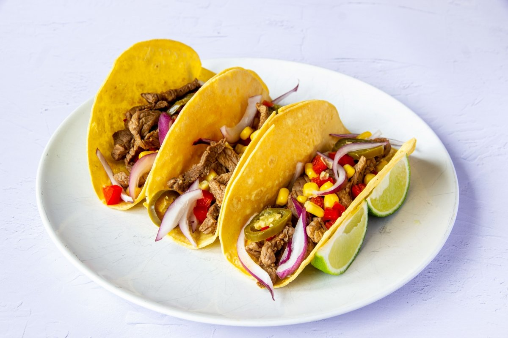

FOODLAND
Recetas
Dietas
Tacos de Carne
40 minutos
Ingredientes:
Carne de res
Tortillas de maíz
Cebolla
Cilantro
Limón
Sal
Aceite de oliva
Pasos:
En una sartén grande, calienta el aceite de oliva a fuego medio-alto.
Añade la carne de res en trozos pequeños a la sartén y cocínala hasta que esté dorada y tierna. Condimenta con sal al gusto.
Corta la cebolla en rodajas finas y el cilantro en trozos pequeños.
Calienta las tortillas de maíz en una sartén o en el horno hasta que estén calientes y flexibles.
Rellena cada tortilla con la carne de res, cebolla y cilantro. Exprime el jugo de limón sobre los tacos.
Sirve los tacos de carne calientes y disfrútalos.
